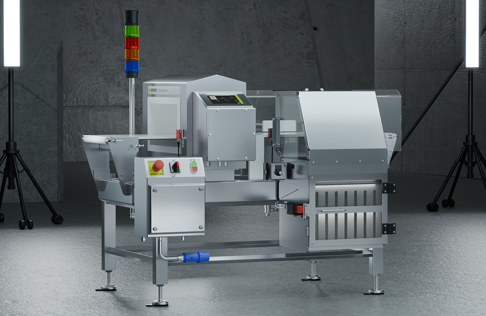
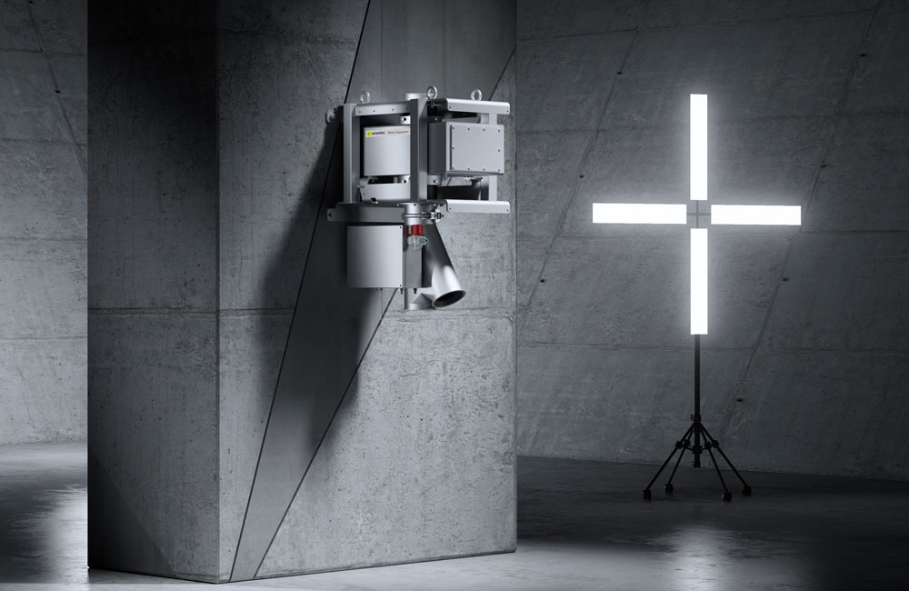
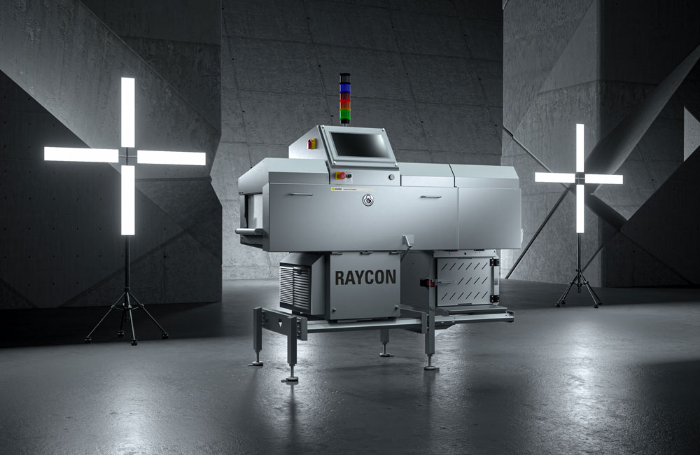

Jelajahi berbagai sistem metal detector dan x-ray inspection mutakhir dari Sesotec yang dirancang khusus untuk memastikan keamanan lini produksi Anda sesuai standar internasional.

Sistem inspeksi logam presisi tinggi dengan teknologi multi-simultan frekuensi untuk produk dalam kemasan pada ban berjalan (conveyor).

Pemisah logam untuk material curah (bulk material) yang jatuh bebas. Sangat cocok untuk bubuk, pelet plastik, granul, dan rempah-rempah.

Sistem inspeksi sinar-X (X-Ray) terdepan untuk mendeteksi kontaminan logam, kaca, batu, keramik, dan plastik padat pada produk jadi.
Konsultasikan spesifikasi lini produksi Anda. Tim engineer kami siap memberikan rekomendasi solusi inspeksi yang paling efisien dan mematuhi regulasi industri Anda.
Konsultasi Gratis via WhatsApp